生理学第04章 (血液循环) 全量卡片图文核对
共 76 道题，请仔细比对题干与切图是否精准对应，是否含有穿题/乱边
Index 1 | ID: q1 | Section: 4.1 心脏泵血
问题：1 心房收缩比心室收缩早的原因、心房心室能否同时收缩、心房心室能否同时舒张 (II A)
Index 2 | ID: q2 | Section: 4.1 心脏泵血
问题：2 心脏泵血过程：心室收缩期、心室舒张期 (II A)

Index 3 | ID: q3 | Section: 4.1 心脏泵血
问题：3 等容收缩期的房室瓣和半月瓣状态、左心房压力和左心室压力和主动脉压力大小比较 (II A)
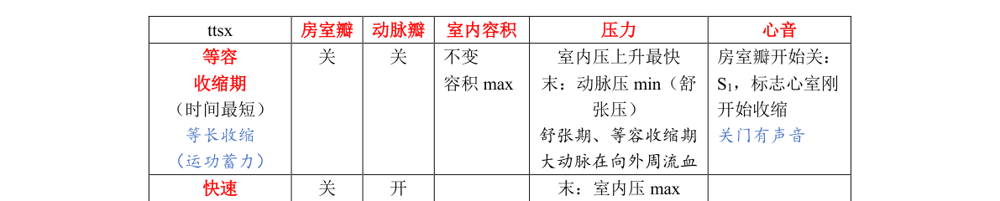
Index 4 | ID: q4 | Section: 4.1 心脏泵血
问题：4 请绘制心室压力容积环 (II A)
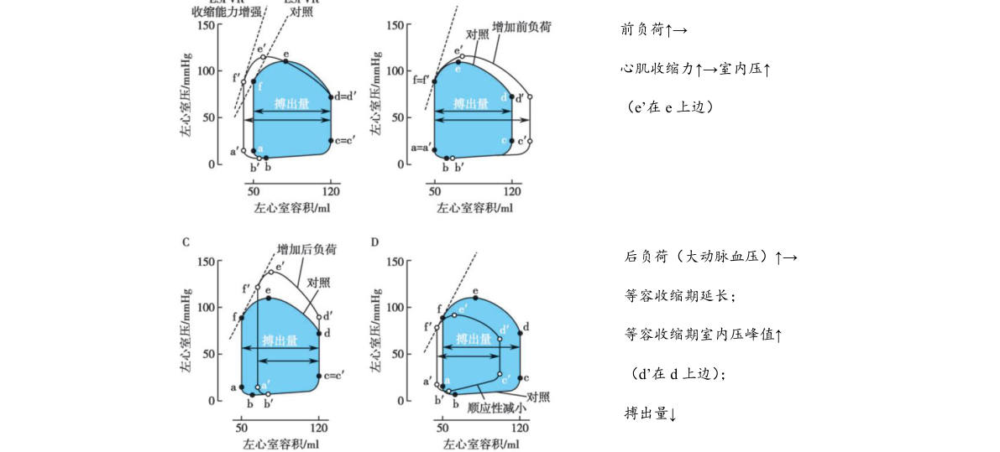
Index 5 | ID: q5 | Section: 4.1 心脏泵血
问题：5 耗时min、耗时max、动脉压min、动脉压max、室内压min、室内压max、室内压上升最快、室内压下降最快、射血量max、充盈量max 分别是哪一时期？(II A)

Index 6 | ID: q6 | Section: 4.1 心脏泵血
问题：6 心动周期的每一时期房室瓣和动脉瓣的开关状态、心室内容积、压力、心音 (III A)
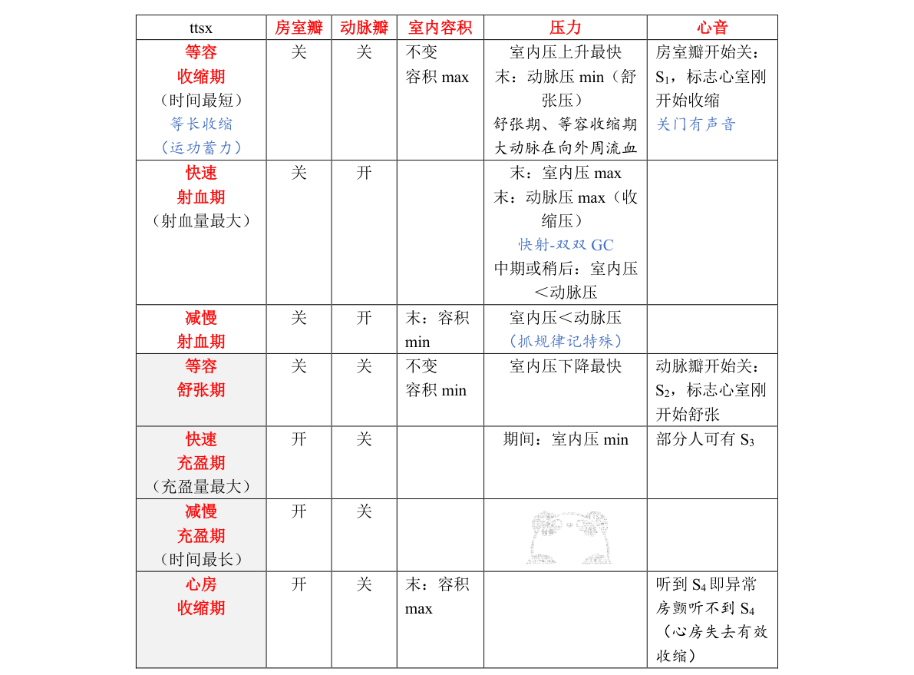
Index 7 | ID: q7 | Section: 4.1 心脏泵血
问题：7 特殊：减慢射血期房室瓣关、动脉瓣开，但房内压＜室内压＜动脉压，那么射血依赖什么？(II A)
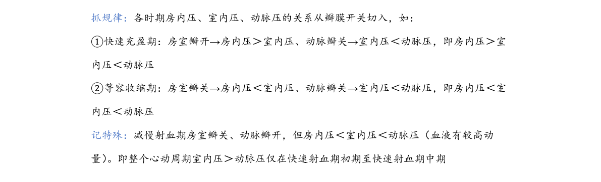
Index 8 | ID: q8 | Section: 4.1 心脏泵血
问题：8 心搏出量的概念及计算公式？(I A)
Index 9 | ID: q9 | Section: 4.1 心脏泵血
问题：9 影响搏出量的因素有哪些？(II A)
Index 10 | ID: q10 | Section: 4.1 心脏泵血
问题：10 前负荷别称也叫什么？前负荷影响搏出量的机制 (II A)
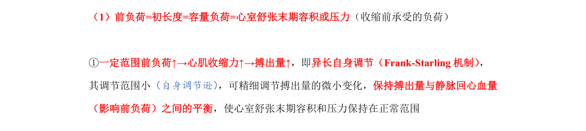
Index 11 | ID: q11 | Section: 4.1 心脏泵血
问题：11 心肌VS 骨骼肌的长度-张力曲线：是否有最适初长度、曲线降支是否明显、初长度储备 (II A)
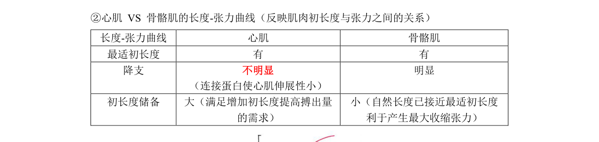
Index 12 | ID: q12 | Section: 4.1 心脏泵血
问题：12 后负荷概念、影响机制；后负荷在一定范围内升高对肌肉收缩张力、肌肉缩短速度、开始缩短时间、肌肉缩短程度的影响 (II A)
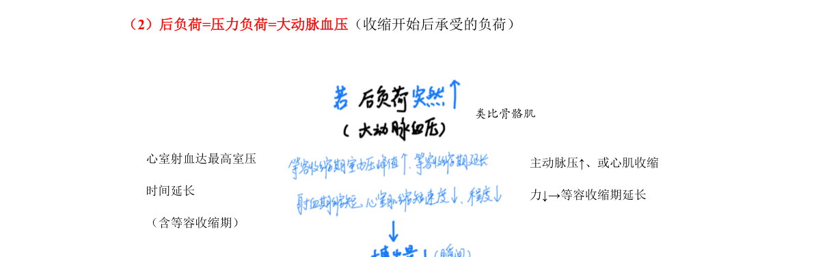
Index 13 | ID: q13 | Section: 4.1 心脏泵血
问题：13 肌肉收缩能力的影响因素有哪些？ (II A)
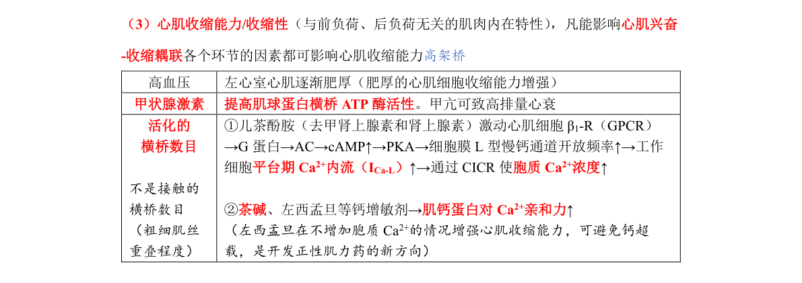
Index 14 | ID: q14 | Section: 4.1 心脏泵血
问题：14 异长调节vs 等长调节：如何影响搏出量、属于什么调节？ (II B)
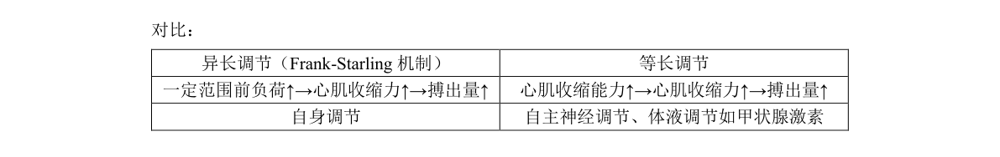
Index 15 | ID: q15 | Section: 4.1 心脏泵血
问题：15 心输出量、心指数的概念 (I A)
Index 16 | ID: q16 | Section: 4.1 心脏泵血
问题：16 影响心输出量的因素有哪些？(III A)
Index 17 | ID: q17 | Section: 4.1 心脏泵血
问题：17 在一定范围内提高心率，心输出量如何变化？(I A)
Index 18 | ID: q18 | Section: 4.1 心脏泵血
问题：18 心率过快（心动过速＞180 次/分、心率过慢＜40 次/分心输出量分别如何变化？ (II A)

Index 19 | ID: q19 | Section: 4.1 心脏泵血
问题：19 房颤的表现有哪些？治疗原则是什么？(II B)
Index 20 | ID: q20 | Section: 4.1 心脏泵血
问题：20 心泵功能储备的概念及分类 (II B)
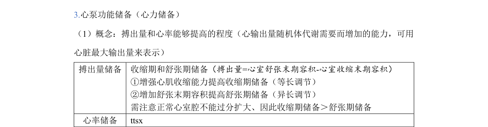
Index 21 | ID: q21 | Section: 4.1 心脏泵血
问题：21 心衰时心力储备的变化 (II B)
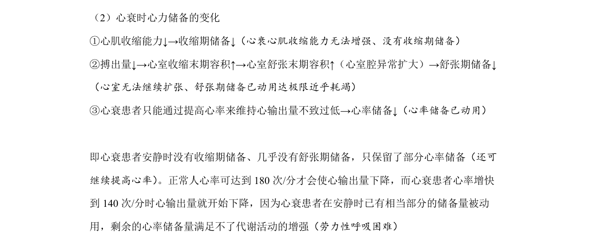
Index 22 | ID: q22 | Section: 4.1 心脏泵血
问题：22 射血分数概念 (I B)
Index 23 | ID: q23 | Section: 4.1 心脏泵血
问题：23 心衰患者更敏感反应心泵功能减退的指标是 (I A)
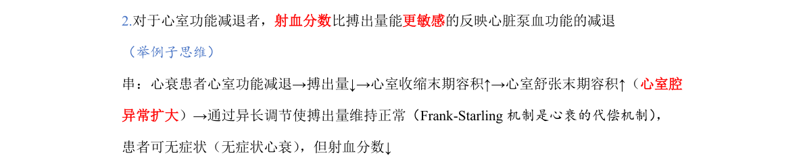
Index 24 | ID: q24 | Section: 4.1 心脏泵血
问题：24 从心室压力变化评价的金标准检查 (II A)
Index 25 | ID: q25 | Section: 4.1 心脏泵血
问题：25 从心室容积变化评价的金标准检查 (II A)
Index 26 | ID: q26 | Section: 4.1 心脏泵血
问题：26 评价左心室收缩功能、舒张功能的指标 (III A)
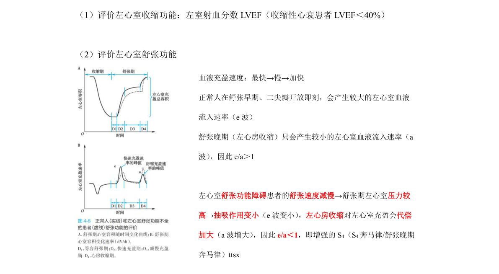
Index 27 | ID: q27 | Section: 4.1 心脏泵血
问题：27 从心脏做功角度评价：右心室做功量与左心室做功量比较、心脏作功用来评价什么 (II B)
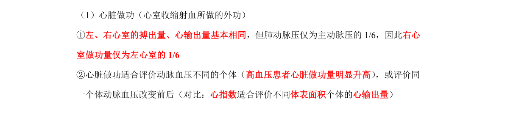
Index 28 | ID: q28 | Section: 4.1 心脏泵血
问题：28 从心室压力－容积环角度评价：后负荷增加、前负荷增加、收缩能力增强、顺应性减小环分别如何变化？环的横径分别如何变化？ (III A)
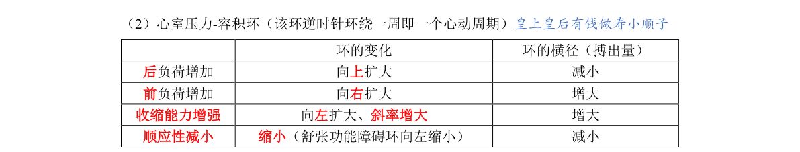
Index 29 | ID: q29 | Section: 4.1 心脏泵血
问题：29 骨骼肌收缩能力增加：张力－速度曲线、长度－张力曲线分别如何变化？ (II A)
Index 30 | ID: q30 | Section: 4.1 心脏泵血
问题：30 心肌收缩能力增加：心室功能曲线如何变化？ (II A)
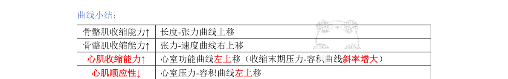
Index 31 | ID: q31 | Section: 4.1 心脏泵血
问题：31 心肌顺应性下降：心室压力－容积曲线如何变化？ (II A)
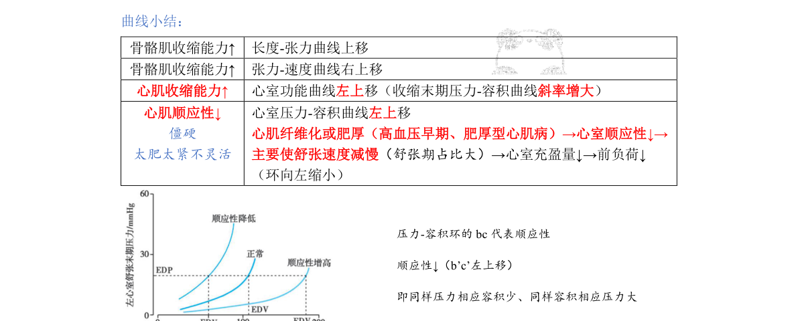
Index 32 | ID: q32 | Section: 4.1 心脏泵血
问题：32 顺应性主要影响心动周期的哪时期？ (II A)
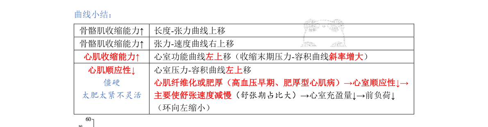
Index 33 | ID: q33 | Section: 4.1 心脏泵血
问题：33 二尖瓣狭窄、二尖瓣关闭不全、主动脉狭窄、主动脉关闭不全闻及杂音的时期、杂音的变化 (II B)
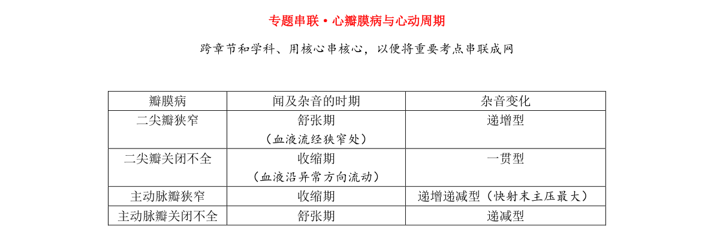
Index 34 | ID: q34 | Section: 4.2 动脉血压
问题：1 弹性储器血管、分配血管、毛细血管前阻力血管、交换血管、毛细血管后阻力血管、短路血管、容量血管的分布位置及功能 (II A)
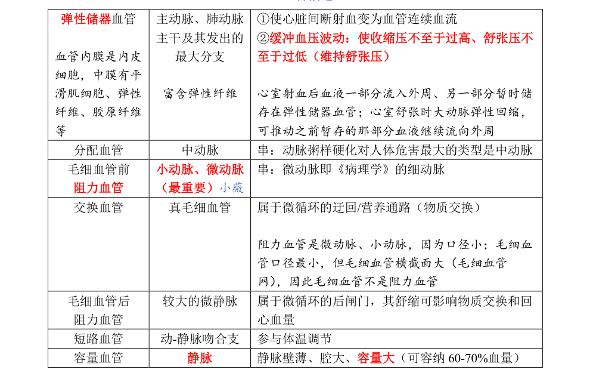
Index 35 | ID: q35 | Section: 4.2 动脉血压
问题：2 动脉粥样硬化对人体危害最大的血管类型是？ (I A)
Index 36 | ID: q36 | Section: 4.2 动脉血压
问题：3 影响血流阻力的因素有哪些？最主要的是？ (I A)
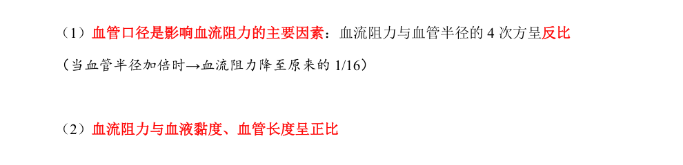
Index 37 | ID: q37 | Section: 4.2 动脉血压
问题：4 血液黏度的影响因素，最主要的是？ (I A)
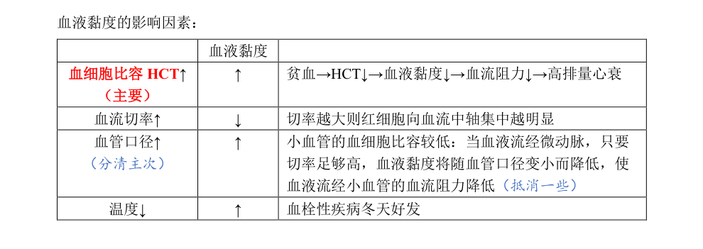
Index 38 | ID: q38 | Section: 4.2 动脉血压
问题：5 微动脉的作用有哪些 (II A)
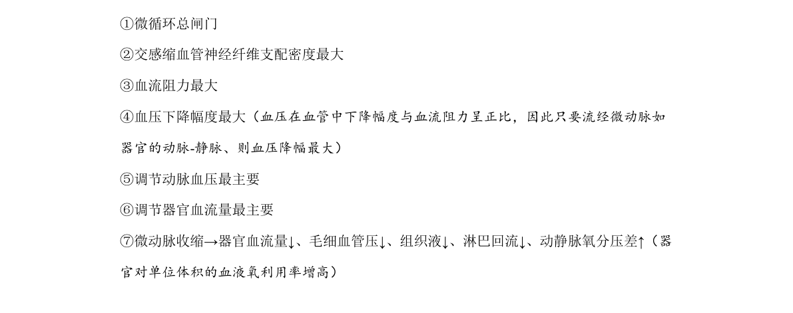
Index 39 | ID: q39 | Section: 4.2 动脉血压
问题：6 贫血患者血细胞比容如何变？血流阻力如何变化？可以导致什么心衰？ (I A)
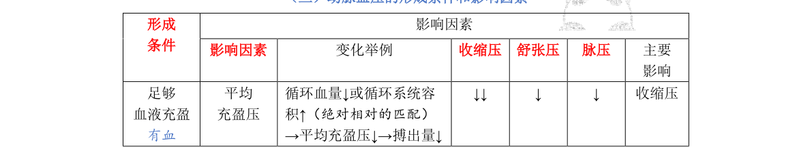
Index 40 | ID: q40 | Section: 4.2 动脉血压
问题：7 收缩压、舒张压、脉压、平均动脉压的概念、测量时期/计算公式、理想值 (II B)
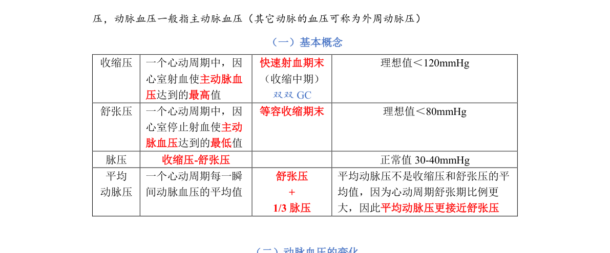
Index 41 | ID: q41 | Section: 4.2 动脉血压
问题：8 老年高血压特点 (I A)
Index 42 | ID: q42 | Section: 4.2 动脉血压
问题：9 高血压、动脉粥样硬化舒张压和舒张压是如何变化的？ (II A)

Index 43 | ID: q43 | Section: 4.2 动脉血压
问题：10 血压受谁调节？血压波动高峰时间段是在？ (II B)
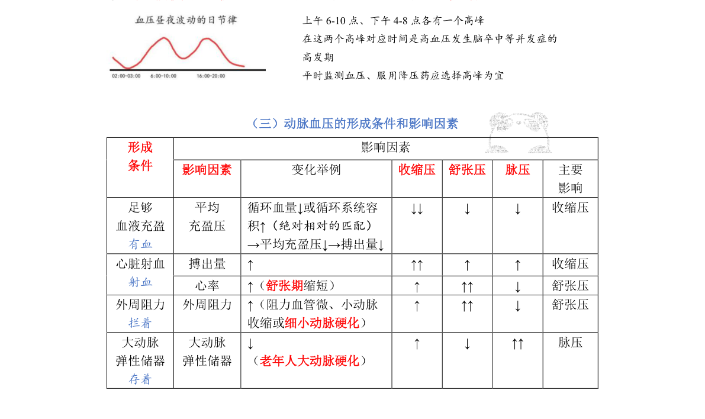
Index 44 | ID: q44 | Section: 4.2 动脉血压
问题：11 动脉血压的形成条件 (II A)
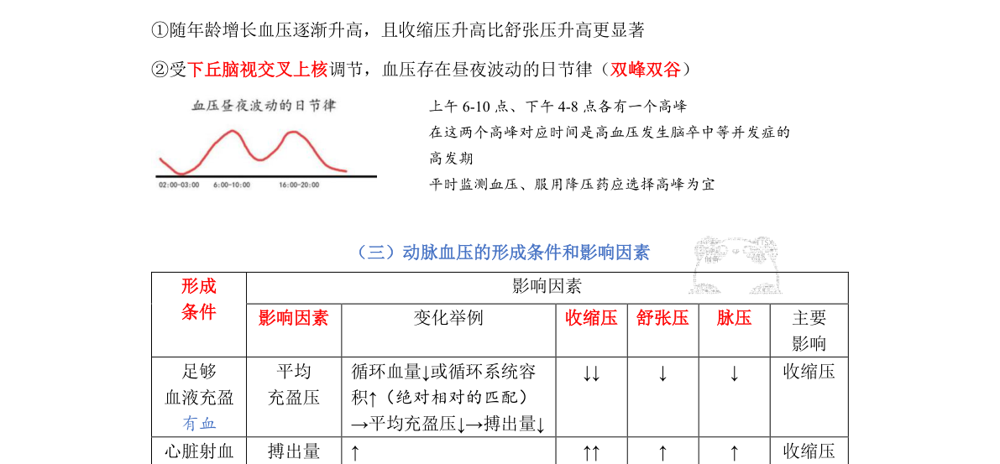
Index 45 | ID: q45 | Section: 4.2 动脉血压
问题：12 动脉血压的影响因素有哪些 (II A)
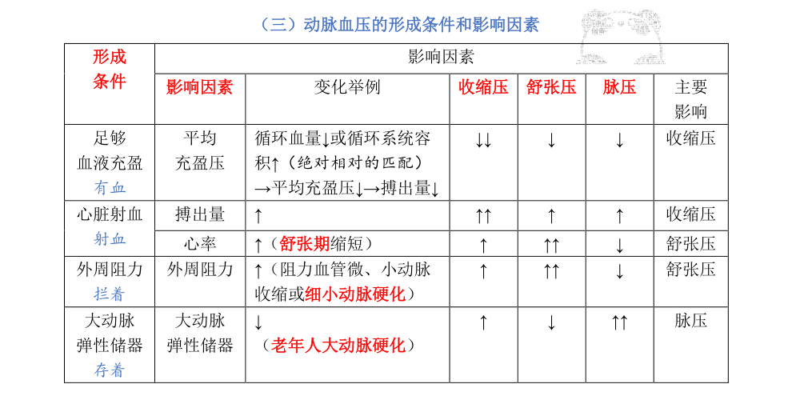
Index 46 | ID: q46 | Section: 4.2 动脉血压
问题：13 大动脉弹性储器发挥什么作用？ (I A)

Index 47 | ID: q47 | Section: 4.2 动脉血压
问题：14 收缩压、舒张压、脉压如何变化及常考点：每搏量↑增加、心率加快、外周阻力增加、大动脉弹性减弱、主动脉瓣闭合不全、循环血量与血管系统容量的比例下降 (III A)
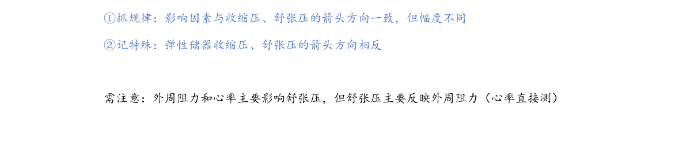
Index 48 | ID: q48 | Section: 4.2 动脉血压
问题：15 中心静脉压的概念及正常值 (I A)
Index 49 | ID: q49 | Section: 4.2 动脉血压
问题：16 中心静脉压反映什么？ (II A)

Index 50 | ID: q50 | Section: 4.2 动脉血压
问题：17 影响静脉回心血量的因素有哪些？（右心射血能力、吸气、血容量、舒张期钙离子回降速度、心率、心包压力、顺应性、输液过多过快、直立变平卧、微动脉舒张、静脉收缩、走路跑步、站在深水里） (III A)
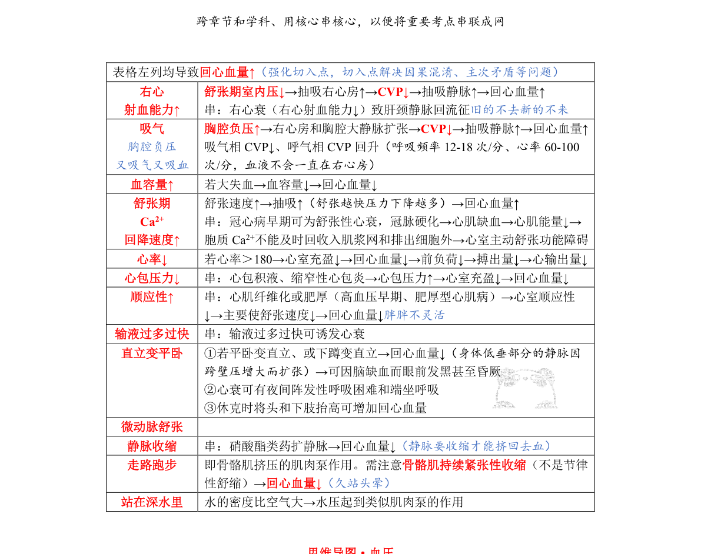
Index 51 | ID: q51 | Section: 4.2 动脉血压
问题：18 为什么直立过久会引起下肢水肿、重力性休克？有何生理代偿？ (II A)
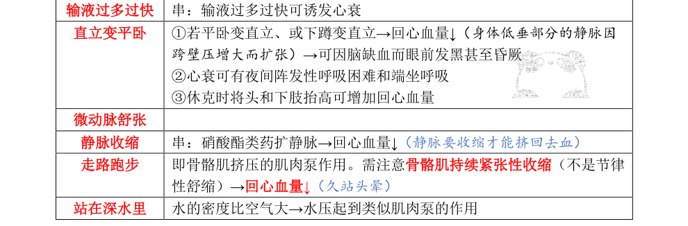
Index 52 | ID: q52 | Section: 4.3 微循环和组织液生成
问题：1 决定真毛细血管血流量的是 (I A)
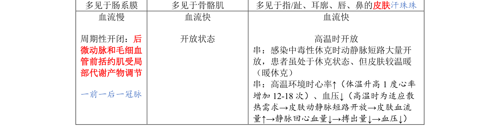
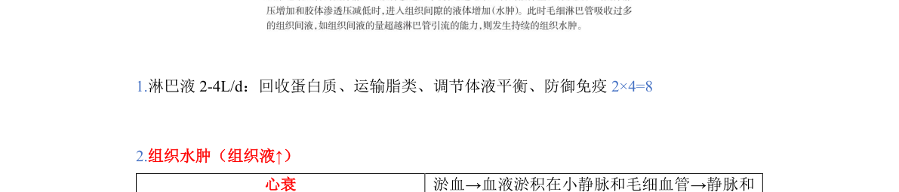
Index 53 | ID: q53 | Section: 4.3 微循环和组织液生成
问题：2 请简要绘制微循环通路 (II B)
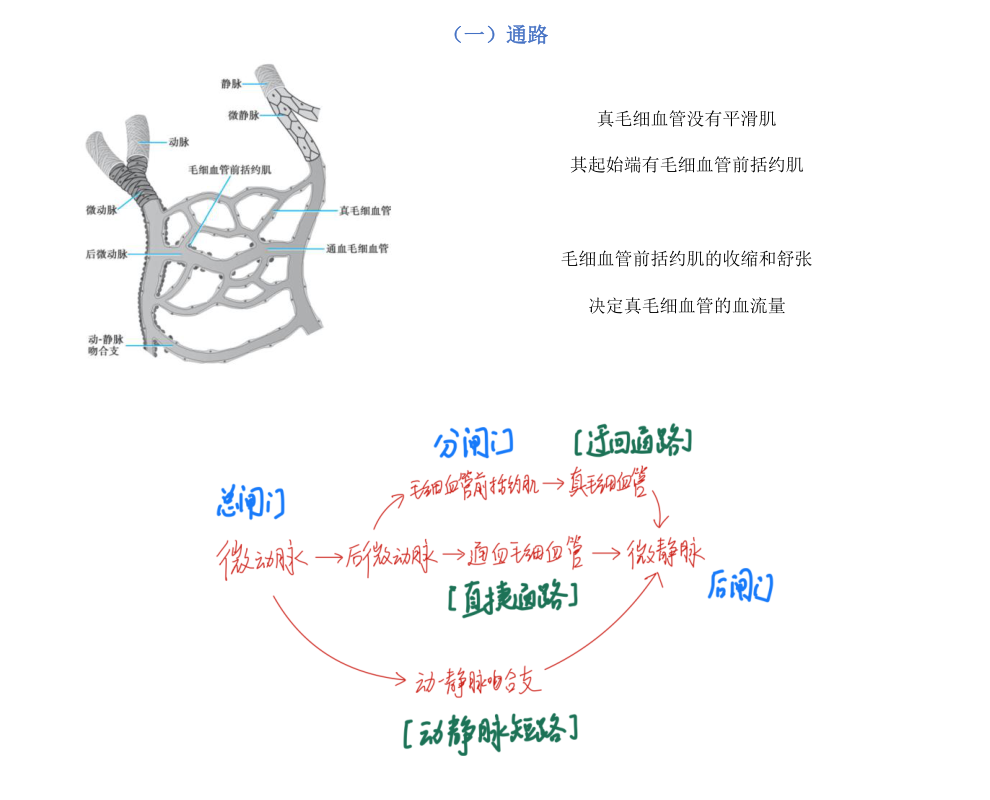
Index 54 | ID: q54 | Section: 4.3 微循环和组织液生成
问题：3 迂回/营养通路、直捷通路、动静脉短路的功能、分布、开放周期、血流速度 (II A)
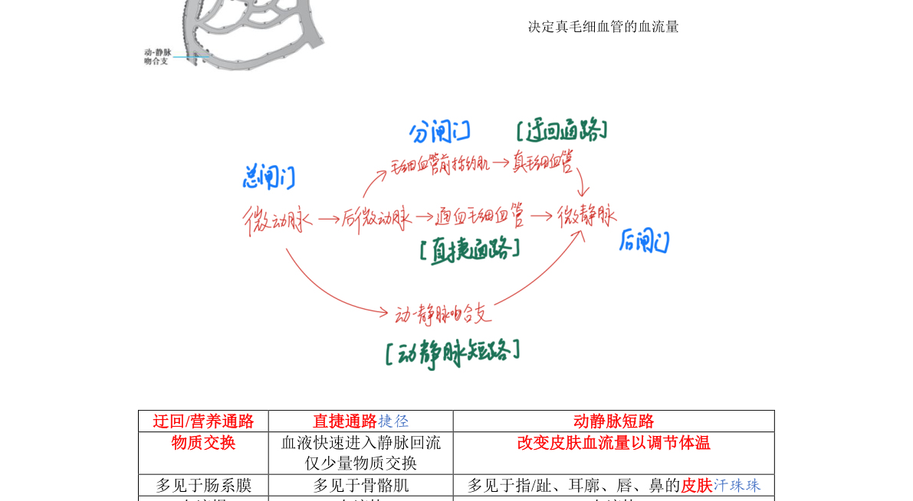
Index 55 | ID: q55 | Section: 4.3 微循环和组织液生成
问题：4 调节毛细血管前括约肌和后微动脉的收缩、舒张的是？ (I A)
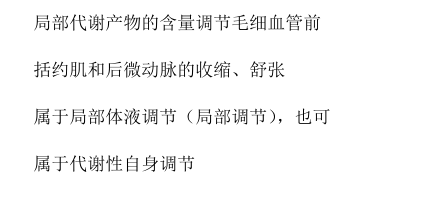
Index 56 | ID: q56 | Section: 4.3 微循环和组织液生成
问题：5 感染中毒性休克时为什么是暖休克？ (I A)
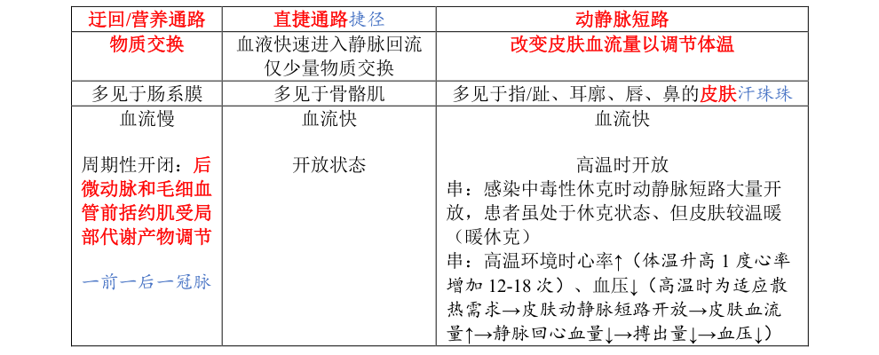
Index 57 | ID: q57 | Section: 4.3 微循环和组织液生成
问题：6 有效过滤压公式 (I B)
Index 58 | ID: q58 | Section: 4.3 微循环和组织液生成
问题：7 淋巴液产生量及功能 (I B)
Index 59 | ID: q59 | Section: 4.3 微循环和组织液生成
问题：8 心衰、肝病、肾病、营养不良、炎症、丹毒、乳腺癌橘皮样变、丝虫病导致组织水肿的机制分别是？ (III A)
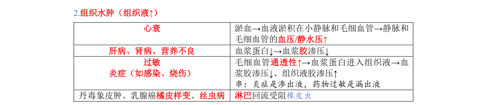
Index 60 | ID: q60 | Section: 4.3 冠脉循环
问题：9 心肌细胞摄氧量高的机制、动静脉血氧分压差的大小 (I A)
Index 61 | ID: q61 | Section: 4.3 冠脉循环
问题：10 判断左、右冠脉灌注的方法 (II A)
Index 62 | ID: q62 | Section: 4.3 冠脉循环
问题：11 影响冠脉流量的因素有哪些 (III A)
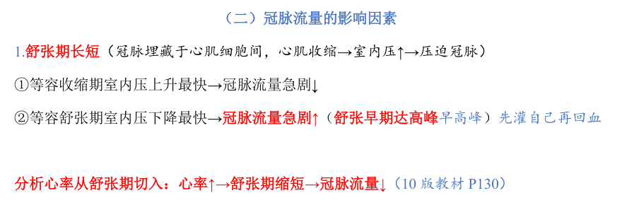
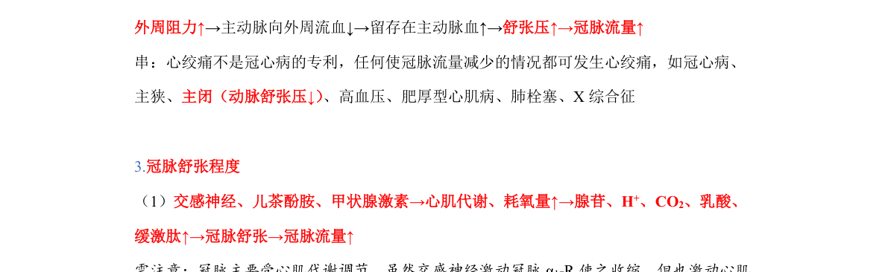
Index 63 | ID: q63 | Section: 4.3 冠脉循环
问题：12 冠脉流量急剧下降的时期、冠脉流量急剧上升的时期 (I A)
Index 64 | ID: q64 | Section: 4.3 冠脉循环
问题：13 心率加快，冠脉流量如何变化？ (I A)
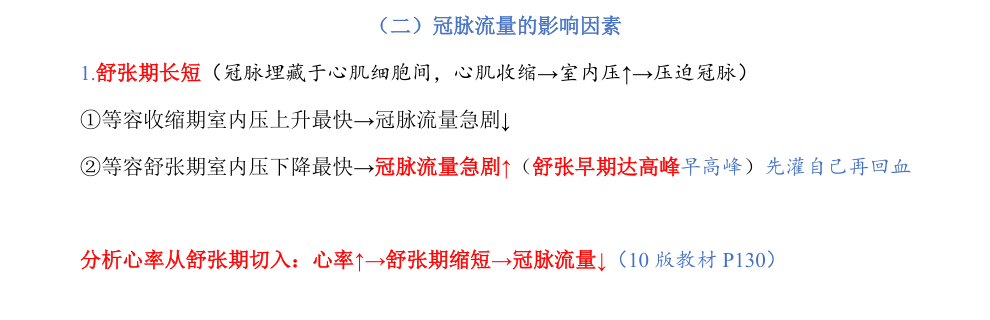
Index 65 | ID: q65 | Section: 4.3 冠脉循环
问题：14 串联β受体阻断剂抗心绞痛的机制 (II A)
Index 66 | ID: q66 | Section: 4.3 冠脉循环
问题：15 串联硝酸酯抗心绞痛的机制 (II A)
Index 67 | ID: q67 | Section: 4.3 冠脉循环
问题：16 能导致心绞痛的疾病有哪些？ (II B)
Index 68 | ID: q68 | Section: 4.3 冠脉循环
问题：17 外周阻力增加，冠脉流量如何改变？ (I A)
Index 69 | ID: q69 | Section: 4.3 冠脉循环
问题：18 冠脉主要受什么调节？ (II A)
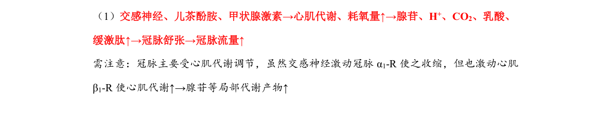
Index 70 | ID: q70 | Section: 4.3 冠脉循环
问题：19 大失血时，交感神经兴奋调节冠脉流量的机制和意义 (II A)
Index 71 | ID: q71 | Section: 4.3 冠脉循环
问题：20 NO、降钙素基因相关肽、迷走神经、AngII、大剂量血管升压素对冠脉流量分别为何影响？ (II A)
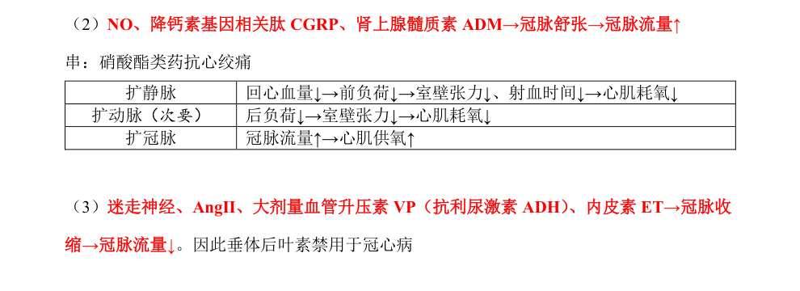
Index 72 | ID: q72 | Section: 4.3 微循环和组织液生成
问题：21 心动周期变短如何分析舒张压、收缩压 (I A)
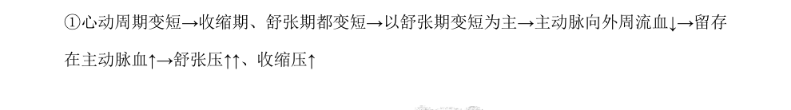
Index 73 | ID: q73 | Section: 4.3 微循环和组织液生成
问题：22 搏出量↓、后负荷↑如何影响收缩压、舒张压 (I A)
Index 74 | ID: q74 | Section: 4.3 微循环和组织液生成
问题：23 心脏射血能力↑的瞬间对动脉血压和 CVP 的影响 (II A)
Index 75 | ID: q75 | Section: 4.3 微循环和组织液生成
问题：24 微动脉收缩对 CVP、动脉血压、等容收缩期的影响 (II A)
Index 76 | ID: q76 | Section: 4.3 微循环和组织液生成
问题：25 急性失血对动脉血压、CVP、HCT 的影响 (II A)